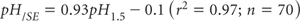

Measurement of pH of SEs has been helped by the ready availability of pH probes of suitable size, and with sufficient ruggedness to resist abrasion from the soil. Lyons et al. (2003) reported a strong linear relationship between pH/SE and pH1:5 (Method 4A1), described by the equation:

Proceed as for Method 4A1, following determination of EC/SE. The SE should receive only slight mechanical stirring during measurement. If stirring is too vigorous atmospheric CO2 can be absorbed, affecting pH/SE values as a consequence of chemical reactions. A small combination electrode in a narrow borosilicate glass vial is preferred; plastic vials may cause irregularities due to electrostatic effects.
Report pH/SE at 25°C, together with method codes for preparing and extracting the SE.